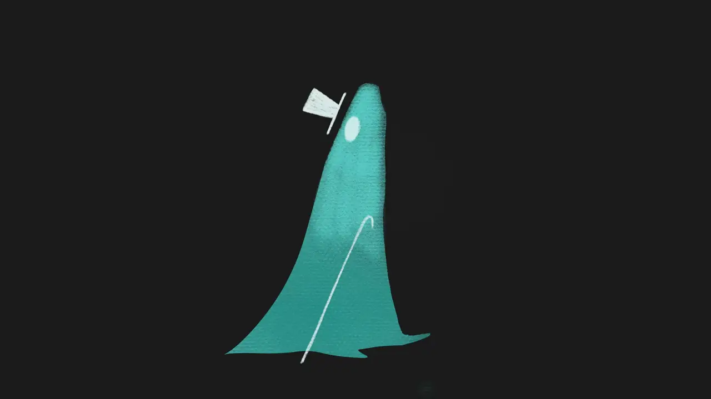
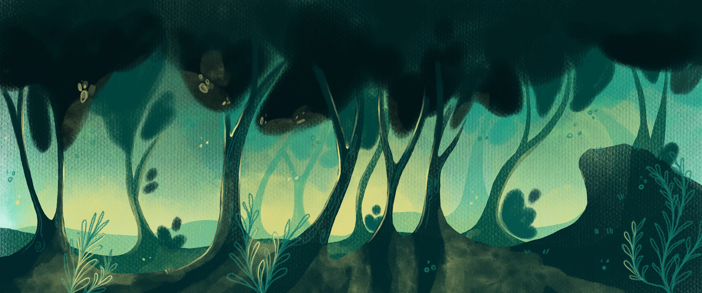
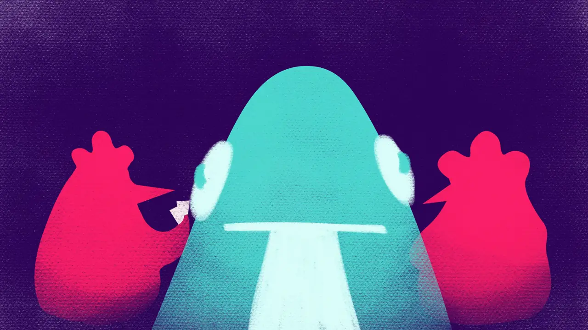

Short animation film
Poker
The film was created during a workshop at Filmuniversität Babelsberg Konrad Wolf. In five days, I developed the story, designed the characters and visual style, animated the scenes, and completed the compositing. I collaborated with musicians who composed the original score. The story follows a character who loses a poker game. Through this situation, I examine how social pressure shapes individual choices and behavior. The project combines frame-by-frame 2D animation with compositing in After Effects. I focused on color, camera movement, framing, and lighting to strengthen the emotional tension and visual rhythm.



